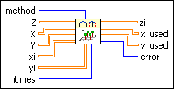
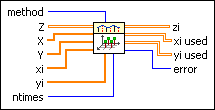
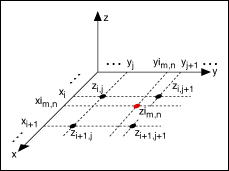

Performs two-dimensional interpolation using a selected interpolation method based on the lookup table defined by X, Y, and Z, where Z is a 2D array. You must manually select the polymorphic instance to use.
Performs two-dimensional interpolation when X, Y, xi, and yi are 2D arrays.

method sets the interpolation method.
0
nearest—Selects the Z value that corresponds to the X, Y value that is nearest to the current xi, yi value. The interpolated value is set to the nearest data point.
1
bilinear—Sets the interpolated values to points along the line segments that connect X and Y.
2
bicubic—Yields an interpolated point from a bicubic surface that covers sixteen of the closest X, Y, Z data points and guarantees that the first partial derivatives and the second-order mixed derivative of the interpolated surfaces are continuous.
3
bicubic spline—Guarantees that the first and second partial derivatives of the cubic interpolating polynomials are continuous, even at the data points.
Z is the 2D array of tabulated values of the dependent variable.
X is the 2D array of tabulated values of the first independent variable. All interpolation methods require that X be monotonic along each row, and all rows must be identical. Otherwise, this VI uses only the first row of X to perform the interpolation. If X is not empty, the number of columns in X must equal the number of columns in Z. If X is empty, this VI treats X as an array whose size equals the size of Z and whose rows are [0, 1, �, N – 1], where N is the number of columns in Z.
Y is the 2D array of tabulated values of the second independent variable. All interpolation methods require that Y be monotonic along each column, and all columns must be identical. Otherwise, this VI uses only the first column of Y to perform the interpolation. If Y is not empty, the number of rows in Y must equal the number of rows in Z. If Y is empty, this VI treats Y as an array whose size equals the size of Z and whose columns are [0, 1, �, M – 1]T, where M is the number of rows in Z.
xi is the 2D array of values of the first independent variable at which interpolated values of the dependent variable zi are to be computed.
yi is the 2D array of values of the second independent variable at which interpolated values of the dependent variable zi are to be computed. The size of yi must equal the size of xi.
ntimes determines the locations of the interpolation points. Interpolations between each X element and each Y element are repeated ntimes. If you wire data to xi or yi, this VI ignores ntimes.
zi is the output 2D array of interpolated values that correspond to the xi, yi independent variable values.
xi used is the 2D array of values of the first independent variable at which interpolated values of the dependent variable zi are computed. If you wire data to xi, xi used returns xi unchanged. Otherwise, xi used returns an array with identical rows of 2ntimes – 1 points located evenly between each two adjacent elements in the first row of X, and the number of rows in xi used equals the number of rows in yi used.
yi used is the 2D array of values of the second independent variable at which interpolated values of the dependent variable zi are computed. If you wire data to yi, yi used returns yi unchanged. Otherwise, yi used returns an array with identical columns of 2ntimes – 1 points located evenly between each two adjacent elements in the first column of Y, and the number of columns in yi used equals the number of columns in xi used.
error returns any error or warning from the VI. You can wire error to the Error Cluster From Error Code VI to convert the error code or warning into an error cluster.
Performs two-dimensional interpolation when X and Y are 1D arrays and xi and yi are 2D arrays.
method sets the interpolation method.
0
nearest—Selects the Z value that corresponds to the X, Y value that is nearest to the current xi, yi value. The interpolated value is set to the nearest data point.
1
bilinear—Sets the interpolated values to points along the line segments that connect X and Y.
2
bicubic—Yields an interpolated point from a bicubic surface that covers sixteen of the closest X, Y, Z data points and guarantees that the first partial derivatives and the second-order mixed derivative of the interpolated surfaces are continuous.
3
bicubic spline—Guarantees that the first and second partial derivatives of the cubic interpolating polynomials are continuous, even at the data points.
Z is the 2D array of tabulated values of the dependent variable.
X is the 1D array of tabulated values of the first independent variable. All interpolation methods require that X be monotonic. If X is not empty, the length of X must equal the number of columns in Z. If X is empty, this VI treats X as [0, 1, �, N – 1], where N is the number of columns in Z.
Y is the 1D array of tabulated values of the second independent variable. All interpolation methods require that Y be monotonic. If Y is not empty, the length of Y must equal the number of rows in Z. If Y is empty, this VI treats Y as [0, 1, �, M – 1], where M is the number of rows in Z.
xi is the 2D array of values of the first independent variable at which interpolated values of the dependent variable zi are to be computed.
yi is the 2D array of values of the second independent variable at which interpolated values of the dependent variable zi are to be computed. The size of yi must equal the size of xi.
ntimes determines the locations of the interpolation points. Interpolations between each X element and each Y element are repeated ntimes. If you wire data to xi or yi, this VI ignores ntimes.
zi is the output 2D array of interpolated values that correspond to the xi, yi independent variable values.
xi used is the 2D array of values of the first independent variable at which interpolated values of the dependent variable zi are computed. If you wire data to xi, xi used returns xi. Otherwise, xi used returns an array with rows of 2ntimes – 1 points located evenly between each two adjacent elements in X, and the number of rows in xi used equals the number of rows in yi used.
yi used is the 2D array of values of the second independent variable at which interpolated values of the dependent variable zi are computed. If you wire data to yi, yi used returns yi. Otherwise, yi used returns an array with columns of 2ntimes – 1 points located evenly between each two adjacent elements in Y, and the number of columns in yi used equals the number of columns in xi used.
error returns any error or warning from the VI. You can wire error to the Error Cluster From Error Code VI to convert the error code or warning into an error cluster.
Performs two-dimensional interpolation when X, Y, xi, and yi are 1D arrays.

method sets the interpolation method.
0
nearest—Selects the Z value that corresponds to the X, Y value that is nearest to the current xi, yi value. The interpolated value is set to the nearest data point.
1
bilinear—Sets the interpolated values to points along the line segments that connect X and Y.
2
bicubic—Yields an interpolated point from a bicubic surface that covers sixteen of the closest X, Y, Z data points and guarantees that the first partial derivatives and the second-order mixed derivative of the interpolated surfaces are continuous.
3
bicubic spline—Guarantees that the first and second partial derivatives of the cubic interpolating polynomials are continuous, even at the data points.
Z is the 2D array of tabulated values of the dependent variable.
X is the 1D array of tabulated values of the first independent variable. All interpolation methods require that X be monotonic. If X is not empty, the length of X must equal the number of columns in Z. If X is empty, this VI treats X as [0, 1, �, N – 1], where N is the number of columns in Z.
Y is the 1D array of tabulated values of the second independent variable. All interpolation methods require that Y be monotonic. If Y is not empty, the length of Y must equal the number of rows in Z. If Y is empty, this VI treats Y as [0, 1, �, M – 1], where M is the number of rows in Z.
xi is the 1D array of values of the first independent variable at which interpolated values of the dependent variable zi are to be computed.
yi is the 1D array of values of the second independent variable at which interpolated values of the dependent variable zi are to be computed.
ntimes determines the locations of the interpolation points. Interpolations between each X element and each Y element are repeated ntimes. If you wire data to xi or yi, this VI ignores ntimes.
zi is the output 2D array of interpolated values that correspond to the xi, yi independent variable values.
xi used is the 2D array of values of the first independent variable at which interpolated values of the dependent variable zi are computed. If you wire data to xi, xi used returns xi. Otherwise, xi used returns an array with rows of 2ntimes – 1 points located evenly between each two adjacent elements in X, and the number of rows in xi used equals the number of rows in yi used.
yi used is the 2D array of values of the second independent variable at which interpolated values of the dependent variable zi are computed. If you wire data to yi, yi used returns yi. Otherwise, yi used returns an array with columns of 2ntimes – 1 points located evenly between each two adjacent elements in Y, and the number of columns in yi used equals the number of columns in xi used.
error returns any error or warning from the VI. You can wire error to the Error Cluster From Error Code VI to convert the error code or warning into an error cluster.
This VI accepts tabulated X, Y, and Z values (two independent variables and one dependent variable, respectively) and provides interpolated values zi that correspond to each xi, yi location. The VI looks up each value of xi, yi in X, Y and uses the relative location in X, Y to find the interpolated value zi at the relative location within Z.
This VI allows you to choose between four different interpolation methods.
In the following illustration, xi and yi are 2D arrays that specify the coordinates to be interpolated. In other words, the coordinates of zim, n are (xim, n, yim, n), where m and n are the indices for xi, yi, and zi. X and Y are 1D arrays that specify the coordinates of Z. i and j are the indices of X and Y, respectively. Z is the 2D array that represents the corresponding dependent variable, and the red dot specifies the position of zim, n.

Nearest Interpolation Method
The nearest method finds the point nearest to (xim, n, yim, n) and commits the corresponding z value in Z to zim, n. In the previous illustration, zim, n = zi, j + 1.
Bilinear Interpolation Method
The bilinear method is the extension of the linear method in the Interpolate 1D VI. The bilinear method calculates the 1D linear interpolation twice along the x-axis and returns the interpolated values at points a and b, represented by the blue dots in the following illustration. This VI then calculates the 1D linear interpolation along the y-axis, represented by the line segment that connects a and b in the following illustration, and returns zim, n.
Bicubic Interpolation Method
Use the bicubic method to perform interpolation within grid rectangles. This method ensures that the inside interpolated surfaces, their first partial derivatives, and the second-order mixed derivative all are continuous.
Refer to Numerical Recipes in C++ in the Mathematics Related Documentation topic for more information about the bicubic interpolation method.
Bicubic Spline Interpolation Method
The bicubic spline method is an extension of the cubic spline method in the Interpolate 1D VI. This method performs interpolation along one axis using the cubic spline method and then along the other axis using the same method. The bicubic spline method ensures that the first and second partial derivatives of the interpolation polynomials are continuous.
Refer to Numerical Recipes in C++ in the Mathematics Related Documentation topic for more information about the bicubic spline interpolation method.
 Add to the block diagram
Add to the block diagram Find on the palette
Find on the palette